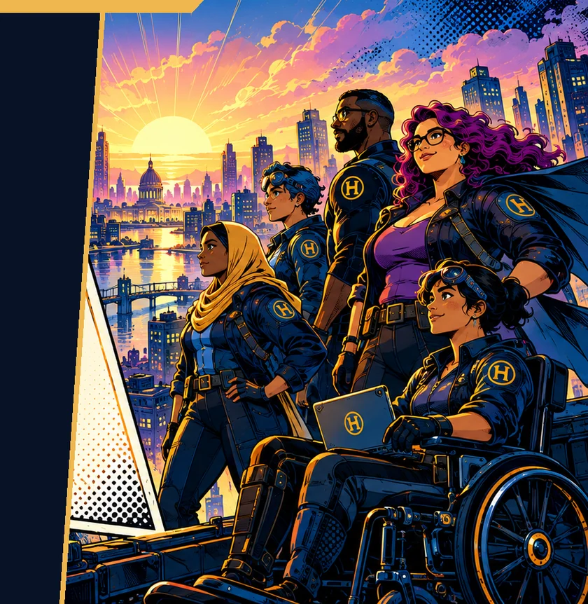
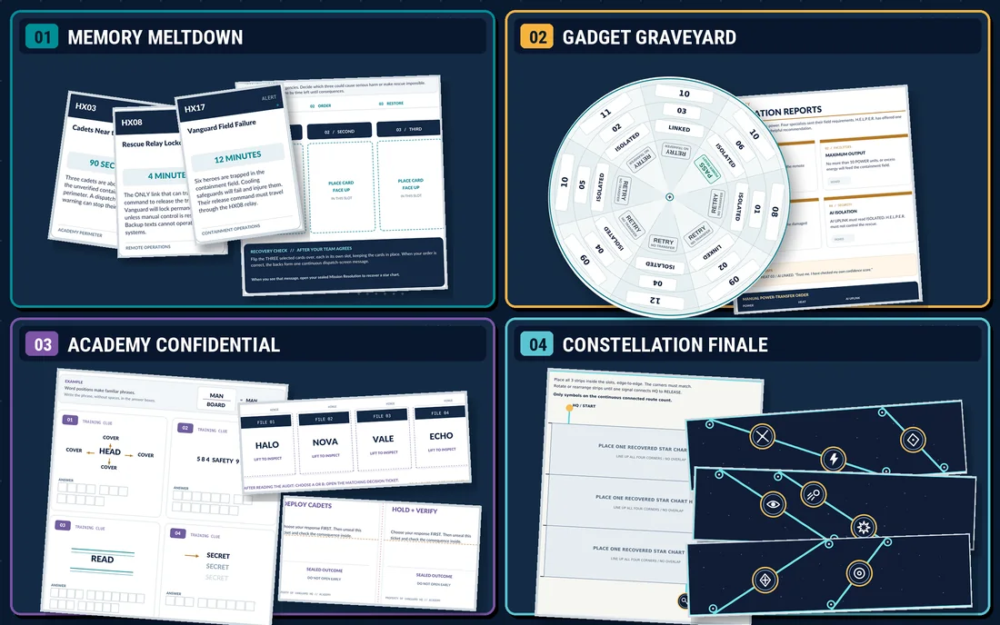

Performance Gap
What aren't people doing successfully, and why?
DEVLEARN 2026 · SESSION 606 · PRESENTED BY PAMELA GUTMAN
Escape-Room-Style Learning
Tied to Real Performance Tasks
Experience a short superhero micro-escape. Then unpack how the decisions inside a puzzle can help learners practice real performance tasks.

01 / TODAY'S MISSION MAP
Solve a short team micro-escape.
Connect puzzle decisions to objectives.
Mechanics, logistics, AI, and stakeholder buy-in.
Create a micro-escape; toolkit + Q&A.
02 / DESIGN FRAMEWORK
Start with the work. Make the thinking playable. Revisit earlier steps when testing shows you need to.
What aren't people doing successfully, and why?
What should learners be able to do, and what counts as success?
What kind of puzzle will help, and how can we make it engaging?
What information, clues, rules, and materials will players need?
How will learners get help, know they're right, and apply the skill elsewhere?
03 / WHAT YOU PLAYED. WHAT YOU PRACTICED.
When the superheroes need rescuing, the people who keep headquarters running become the heroes. The tabletop challenge asks teams to use evidence, spot risks, and make decisions under constraints.
Each chapter provides feedback and a star chart. The three fragments come together in a final constellation console.
Open the H.E.L.P.E.R. finale console
04 / TAKE THE TOOLKIT
Explore the five handouts: a field guide, a design canvas, a puzzle-mechanic menu, a playtesting and logistics checklist, and a pilot proposal with AI prompts. Use them to turn one meaningful decision into a small, testable activity.
View the five toolkit resources
THE PERSON BEHIND THE PUZZLES
IT Trainer & Learning Consultant · Johns Hopkins Applied Physics Laboratory
Adult learning, technical training, and Amazing Race-style workplace challenges. The methods explored here are intended to travel beyond any one workplace.